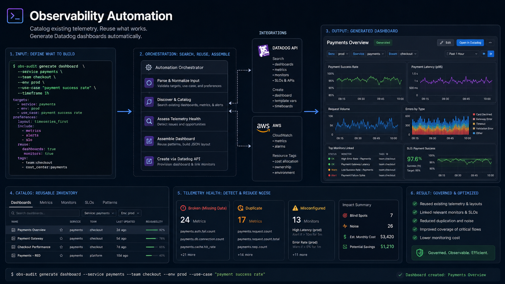

Reuse, Not Rebuild
Turning hours of manual Datadog setup at Nordstrom into a single tagged request — by cataloging teams' proven dashboards, alerts, and metrics so an entire board could be generated from one line of text.

Teams repeatedly spent hours or days creating similar Datadog dashboards, alerts, and metrics. They knew what they wanted to monitor, but not where the data lived, whether another team had already solved it, or how to configure custom metrics.
The result: duplicated work, inconsistent practices, siloed knowledge, unused resources, and unnecessary cost.
A centralized catalog of dashboards, widgets, alerts, metrics, and custom metrics — searchable by tag. Users could inspect working components from other teams, import them, or generate a new configuration from a tagged request.
Automated checks flagged broken, unused, misconfigured, or unusually expensive resources.
A setup process that took hours or days could be completed in minutes. Teams could reuse proven components, reduce duplicated effort, share operational knowledge, and understand the financial impact of their observability footprint.
Because this is a historical project, complete adoption, cost-reduction, and post-launch performance measurements are unavailable.
Everyone solving the same problem, alone
Datadog was widely used across the company, but every team approached onboarding and configuration differently. Creating a useful dashboard was rarely as simple as selecting a few metrics.
- Which data was already available
- Which metric names were correct
- Whether custom instrumentation was required
- Which widgets best represented the system
- Which thresholds should trigger alerts
- Whether another team had already built something similar
- How the monitors would affect Datadog usage and cost
This work was repeated across development, platform, and analytics teams. Even when teams understood what they wanted to observe, they did not necessarily know where to find the data or how to translate it into Datadog resources.
The organization did not lack monitoring knowledge. It lacked a system for finding and sharing that knowledge.
- Excessive custom metrics
- Duplicated monitors
- High-cardinality tags
- Stale dashboards
- Unused synthetic tests
- Broken resources still generating data
- Teams creating similar resources independently
Without governance, the observability environment could become more expensive as it became less understandable.
How might we help teams discover, reuse, and safely generate the monitoring resources they need — while reducing setup time, duplicated work, and unnecessary observability costs?
The research combined stakeholder interviews, usability walkthroughs, technical documentation review, and an audit of existing Datadog resources.
Fluent in the system, not in Datadog
Developers wanted to monitor application behavior, deployments, errors, latency, queues, dependencies, and service-level health.
They understood the system they were building, but were less familiar with Datadog's resource model, API, custom metrics, or cost implications.
The expertise existed — as informal support
Platform engineers supported shared infrastructure and were frequently asked to help other teams create dashboards and alerts.
They had the strongest understanding of Datadog, but much of that expertise was distributed through informal support, examples, scripts, and team-specific conventions — not something anyone could search.
Same needs, different vocabulary
Analysts needed dashboards and alerts for data quality, pipeline behavior, database activity, and reporting systems.
Their needs often overlapped with engineering teams — but they used different terminology and had different levels of access to infrastructure data.
Existing-system review
I reviewed the company's dashboards, widgets, alerts, monitors, metrics, custom metrics, synthetic tests, one-off scripts, direct API integrations, and CLI utilities.
The review showed substantial variation in naming, tagging, structure, quality, and continued usage. Some resources were actively maintained and widely reused. Others had no recent data, pointed to invalid metrics, contained broken queries, or had unclear ownership.
Technical research
- Users knew the operational question, but not the metric name.
- Teams could not easily determine whether a relevant dashboard already existed.
- Custom metrics required additional instrumentation and unfamiliar setup.
- Alert configuration involved uncertainty about thresholds and expected behavior.
- New users struggled to understand the relationship between metrics, widgets, dashboards, and monitors.
- Platform engineers repeatedly answered similar setup questions.
- Teams could not easily assess whether a resource was still working or worth its cost.
Dashboard creation was only the visible part
The underlying need was a searchable observability catalog that could connect people, operational questions, metrics, and reusable monitoring components.
Teams knew what to observe, but not where to find it
Users began with an operational question — Is this service healthy? Are requests slowing down? Is the queue backing up? Did the deployment increase errors? Is the database approaching capacity?
They did not necessarily know the exact metric, query syntax, widget, or alert configuration required to answer it.
The same work was repeated across teams
Different groups frequently created similar dashboards and monitors without knowing a working version already existed elsewhere.
The lack of discovery created duplicated engineering effort and inconsistent results.
The company needed a catalog, not more templates
Static templates could provide a starting point, but would not solve discovery, ownership, maintenance, ranking, or governance.
The requirement was a living catalog that understood which resources existed, how they were used, whether they still worked, and who might benefit from them.
Resource quality and resource cost were connected
Broken or poorly configured resources were not only confusing — they could continue consuming paid Datadog capacity.
Governance needed to consider correctness, usage, ownership, and financial impact together.
Self-service still required safe defaults
Automated creation could reduce setup time, but unrestricted generation could create more duplication and cost. The service needed to prioritize existing, proven resources before creating new ones.
Search before creation
First determine whether a suitable resource already exists.
Reuse proven components
Frequently accessed, successfully running resources should be easy to inspect and import.
Support intent-based requests
Let users search in operational language rather than exact Datadog identifiers.
Make ownership visible
Entries should identify the responsible team, usage context, tags, and maintenance status.
Detect resource health
Identify broken queries, invalid metrics, stale dashboards, dataless widgets, misconfigured alerts.
Expose cost signals
Flag expensive custom metrics and configurations before they become persistent cost problems.
Automate cautiously
Destructive actions should require clear rules, review, or quarantine periods — rather than silently deleting resources.
The design direction centered on four connected capabilities.
Build a company-wide observability catalog
Collect and normalize Datadog resources into a searchable internal catalog.
Rank useful resources
Present widely used, healthy resources before untested or stale ones.
Generate resources from tags
Search first; generate a new dashboard or monitor only when no suitable resource exists.
Automate observability governance
Scheduled processes evaluate the catalog for broken, unused, duplicate, unowned, or expensive resources.
What each catalog entry holds
How resources get ranked
- Frequency of access
- Number of teams using the resource
- Recent successful data
- Lack of query errors
- Active ownership
- Continued maintenance
- Successful alert behavior
- Search the catalog for existing resources
- Return relevant dashboards, widgets, metrics, and alerts
- Allow the user to inspect and select components
- Generate a new dashboard or monitor only when no suitable resource existed
The initial concept included automatically deleting dead resources. Through a modern governance lens, automatic deletion would be too aggressive for many enterprise environments.
Detect a dead resource → delete it.
- Flag the resource.
- Notify its owner.
- Move it into review or quarantine.
- Delete only after a defined period or explicit approval.
The prototype connected Datadog resource collection, catalog storage, search, generation, and automated maintenance.
Resource collection
Using the Datadog Python API, I collected dashboards, widgets, alerts, monitors, metrics, custom metrics, synthetic tests, and related resources — retrieving both configuration and the metadata needed to understand each item.
Cleaning & normalization
Raw Datadog resources varied significantly in structure. I cleaned, grouped, tagged, and normalized the records before storing them in an AWS database — producing a figurative "data book" of the company's observability environment.
Request-by-tag API
An API accepting searches through a CLI. A user searching for application latency monitoring might receive existing latency dashboards, relevant widgets, standard and custom metrics, existing alerts, and resources used by similar services — then choose a proven component instead of building one.
Automated catalog management
AWS Lambda and GitLab CI/CD added new resources, refreshed records, validated metric references, detected broken components, identified dataless dashboards, highlighted stale resources, flagged unusual or expensive usage, and archived per governance rules.
- Interpret the user's tags.
- Search for relevant existing components.
- Rank components by usage and health.
- Present reusable options.
- Assemble selected components.
- Generate missing pieces only when necessary.
- Validate the resulting configuration.
- Deploy or export the resource.
Optional dashboard generation
Users could request a complete dashboard through a set of tags.
The resulting dashboard could be generated using company-approved components rather than an arbitrary set of widgets.
The final concept turned DogWalker into three connected services.
Catalog
A searchable inventory of the company's Datadog resources — which metric to use, which team already monitors this service, whether a resource is still active, and whether a custom metric is unusually expensive.
Builder
A request-based system that recommends or generates dashboards, widgets, alerts, and related resources — searched through a command line using tags and operational language.
Governor
An automated system that identifies resources which are broken, stale, dataless, duplicated, unowned, misconfigured, or potentially expensive.
- Decide what to monitor.
- Search manually for metrics.
- Ask another team for help.
- Review Datadog documentation.
- Build widgets individually.
- Configure alerts.
- Debug the queries.
- Discover another team already built something similar.
- Describe the service and monitoring goal with tags.
- Review ranked, working resources from the catalog.
- Reuse existing components, or generate the missing configuration.
- Validate and deploy.
Creation and restraint
DogWalker began as a dashboard-generation project, but the research showed that generation alone would not solve the underlying problem. The organization did not simply need a faster way to create more Datadog resources — it needed a way to understand, reuse, and govern the resources it already had.
The catalog became the most important part of the concept because it reduced duplicated work and made internal observability knowledge visible across teams.
Automation can reduce friction while simultaneously making it easier to create unnecessary infrastructure.
It should make the recommended action easy — but also reveal when the best action is to reuse, repair, or delete something that already exists.
Replace automatic deletion with lifecycle governance
Resources would be flagged, assigned to owners, quarantined, and removed only after review or a defined expiration period.
Add stronger cost attribution
Each catalog entry would show estimated cost, cardinality risk, usage trends, and the team responsible for the resource.
Measure reuse directly
Track time to create a dashboard, share of requests resolved through reuse, duplicated resources prevented, stale resources retired, reduction in platform support requests, change in custom-metric spend, search success rate, and generated-resource failure rate.
Add policy-as-code controls
Generated dashboards and alerts would be checked against company standards before deployment — covering required ownership tags, approved metric namespaces, alert severity conventions, cost limits, naming standards, runbook links, and environment restrictions.
- Resources represented through structured configuration
- Creation automated and repeatable
- Shared components reused
- Validation before deployment
- CI/CD maintaining the resulting system
- Governance expressed as rules, not informal review
DogWalker was not a replacement for Terraform, and the original implementation was specific to Datadog. Its underlying direction, however, anticipated a broader shift toward treating observability resources as governed, reusable infrastructure rather than manually configured dashboard artifacts.
Observability is itself a platform. Once monitoring resources exist at organizational scale, they require discovery, ownership, lifecycle management, standards, and cost controls — just like any other production system.
ENTERPRISE OBSERVABILITY AUTOMATION · FALL 2019 · CONFIDENTIAL CLIENT
PRODUCT RESEARCH · DEVELOPER EXPERIENCE · AUTOMATION · PLATFORM ENGINEERING · OBSERVABILITY GOVERNANCE
CHRISTOPHER JONES